第一章 计算机系统概述
操作系统的基本概念
操作系统的特征
并发（Concurrence）
操作系统的并发性是通过分时得以实现的
共享（Sharing）
(1)互斥共享方式：在一段时间内只允许一个进程访问的资源称为临界资源或独占资源
(2)同时访问方式：宏观上“同时”，微观上依旧“分时共享”
并发和共享是两个最基本的特征，两者之间互为存在的条件：
1.资源共享是以程序的并发为条件的，若系统不允许程序并发执行，则自然不存在资源共享问题
2.若系统不能对资源共享实施有效的管理，则必将影响到程序的并发执行，甚至根本无法执行
虚拟（Virtual）
1.虚拟是指把一个物理上的实体变为若干逻辑上的对应物
2.用于实现虚拟的技术称为虚拟技术：虚拟处理器技术（时分复用技术），虚拟存储器技术（空分复用技术），虚拟设备技术
异步（Asynchronism）
1.多道程序环境允许多个程序并发执行，但由于资源有限，进程的执行并不是一贯到底的，而是走走停停的，它以不可预知的速度向前推进
2.异步性使得操作系统运行在一种随机的环境下，可能导致进程产生与时间相关的错误；但只要运行环境相同，操作系统就须保证多次运行进程后都能获得相同的结果
操作系统的目标和功能
操作系统作为计算机系统资源的管理者
(1)处理器管理：对处理器的管理可归结为对进程的管理，包括进程控制、进程同步、进程通信、死锁处理、处理机调度等
(2)存储器管理：内存分配、地址映射、内存保护与共享、内存扩充等
(3)文件管理：负责文件管理的部分称为文件系统，文件管理包括文件存储空间的管理、目录管理、文件读写管理和保护等
(4)设备管理：主要任务是完成用户的I/O请求，包括缓冲管理、设备分配、设备处理、虚拟设备等
操作系统作为用户与计算机硬件系统之间的接口
(1)命令接口
1.联机控制方式（联机命令接口、交互式命令接口）：适用于分时或实时系统，输入一条命令执行一次
2.脱机控制方式（脱机命令接口、批处理命令接口）：适用于批处理系统，事先输入一串命令执行
(2)程序接口
程序接口由一组系统调用命令（简称系统调用，也称广义指令）组成，用户通过在程序钟使用这些系统调用来请求操作系统为其提供服务
操作系统用作扩充机器
没有任何软件支持的计算机称为裸机，覆盖来软件的机器称为扩充机器或虚拟机
说明库函数与系统调用的区别和联系
库函数是语言或应用程序的一部分，可以运行在用户空间中。而系统调用是操作系统的一部分，是内核为用户提供的程序接口，运行在内核空间中，而且许多库函数都会使用系统调用来实现功能。未使用系统调用的库函数，其执行效率通常要比系统调用的高。因为使用系统调用时，需要上下文的切换及状态的转换（由用户态转向核心态）。
操作系统的发展与分类
手工操作阶段（此阶段无操作系统）
用户在计算机上算题的所有工作都要人工干预，如程序的装入、运行、结果的输出等
缺点
1.用户独占全机，资源利用率低
2.CPU利用不充分
批处理阶段（操作系统开始出现）
单道批处理系统
1.自动性
2.顺序性
3.单道性
多道批处理系统
1.多道
2.宏观上并行
3.微观上串行
优点：资源利用率高、系统吞吐量大、I/O设备利用率高；
缺点：用户响应时间长、不提供人机交互能力、系统开销大
分时操作系统
1.同时性（多路性）：多台终端同时使用一台计算机
2.交互性：通过终端控制程序运行
3.独立性：多用户彼此独立进行操作，互不干扰
4.及时性：请求响应时间短
目标：比较快速响应用户
实时操作系统（及时性、可靠性）——抢占式的优先级高者优先算法
硬实时系统
时间要求苛刻：飞行器的飞行自动控制系统
软实时系统
相比之下不那么苛刻：飞机订票系统、银行管理系统
网络操作系统和分布式计算机系统
网络操作系统
网络中的各种资源的共享及各台计算机之间的通信
分布式计算机系统
分布性、并行性
两者本质不同
分布式操作系统的若干台计算机相互协同完成同一任务
个人计算机操作系统
最广泛，用于文字处理、电子表格、游戏
操作系统的运行环境
操作系统的运行机制
用户自编程序（应用程序）——不执行特权指令——用户态（目态）
管理程序（内核程序）——执行特权指令——核心态（管态、内核态）
特权指令：清内存，置时钟，分配系统资源，修改虚存的段表或页表，修改用户的访问权限，I/O指令，置中断指令，存取用于内存保护的寄存器、送程序状态字道程序状态字寄存器指令等
时钟管理
计时、通过时钟中断管理实现进程的切换
中断机制
只有一小部分功能属于内核，它们负责保护和恢复中断现场的信息，转移控制权道相关的处理程序。
原语（具有以下特点的程序）
1.处于操作系统的最底层，最接近硬件
2.具有原子性，操作只能一气呵成
3.运行时间短，调用频繁
系统中的设备驱动、CPU切换、进程通信等功能中的部分操作都可定义为原语
系统控制的数据结构及处理
进程管理：进程状态管理、进程调度和分派、创建与撤销进程控制块等
存储器管理：存储器的空间分配和回收、内存信息保护程序、代码对换程序等
设备管理：缓冲区管理、设备分配和回收等
中断和异常
$中断\begin{cases} 内中断（异常）{\begin{cases}自愿中断——指令中断 \\强迫中断{\begin{cases}硬件故障\\软件中断\end{cases}} \end{cases}} \\外中断（强迫中断）{\begin{cases}外设请求\\人的干预\end{cases}} \end{cases}$
系统调用（特殊的公共子程序）
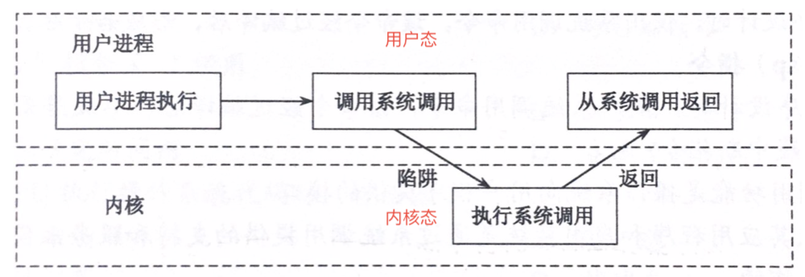 1.设备管理：设备的请求、释放、启动
2.文件管理：文件的读、写、创建、删除
3.进程控制：进程的创建、撤销、阻塞、唤醒
4.进程通信：进程之间的消息传递或信号传递
5.内存管理：内存的分配、回收、获取作业占用内存区大小及始址
大内核和微内核
为解决操作系统的内核代码难以维护的问题，提出了微内核的体系结构。它奖内核中最基本的功能（如进程管理等）保留在内核，而将那些不需要在核心态执行的功能移到用户态执行，从而降低了内核的设计复杂性。
微内核
1.添加系统服务时，不必修改内核
2.使系统更可靠
第二章 进程管理
进程与线程
进程的概念和特征
进程的概念
组成
进程控制块；程序段；数据段
定义
1.进程是程序的一次执行过程
2.进程是一个程序及其数据在处理机上顺序执行时所发生的活动
3.进程是具有独立功能的程序在一个数据集合上运行的过程，它是系统进行资源分配和调度的一个独立单位
4.引入进程实体概念后：进程是进程实体的运行过程，是系统进行资源分配和调度的一个独立单位
进程的特征
动态性(最基本)
进程是程序的一次执行，它有着创建、活动、暂停、终止等过程，具有一定的生命周期，是动态地产生、变化、消亡
并发性
多个进程实体同时存在于内存中，能在一段时间内同步运行。
独立性
进程实体是一个能独立运行、独立获得资源和独立接受调度的基本单位。凡未建立PCB（进程控制块）的程序，都不能作为一个独立的单位参与运行
异步性
由于进程的相互制约，使得进程具有执行的间断性，进程按各自独立的、不可预知的速度向前推进
结构性
每个进程都配置一个PCB对其进行描述。从结构上看，进程实体是由程序段、数据段、进程控制段组成
进程的状态及转换
运行态
进程正在处理机上运行。在但处理机环境下，每个时刻最多只有一个进程处于运行态
就绪态
进程已处于准备状态，即进程获得了除处理机外的一切所需资源，一旦得到处理机即可运行
阻塞态(等待态)
进程正在等待某一事件而暂停运行，如等待某资源为可用（不包括处理机）或等待输入/输出完成。即使处理机空闲，该进程也不能运行
创建态
进程正在被创建，尚未转到就绪态。创建进程步骤:申请空白PBC填写控制和管理进程信息->系统为该进程分配资源->初始化PCB->把该进程转入就绪态
结束态
进程正从系统中消失，可能是进程正常结束或其他原语中断退出运行。进程需要结束运行时，系统首先必须置该进程为结束太，然后进一步处理资源释放和回收工作
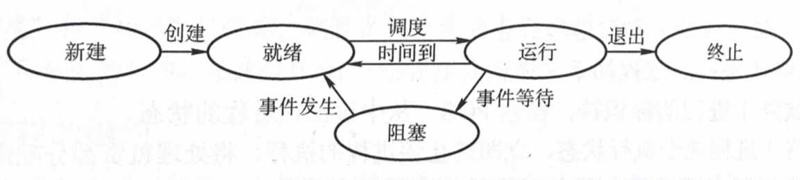
进程控制
原语
进程控制用的程序段,执行期间不允许中断，是一个不可分割的基本单位。
进程的创建
创建者（父进程），被创建者（子进程），子进程继承父进程所拥有的资源
过程
1.分配唯一的进程标识符，申请空白的PCB（有限），若PCB不足则创建失败
2.分配资源，若资源不足，进入“等待态”或“阻塞态”
3.初始化PCB
4.进入就绪态，等待被调度运行
进程的终止
过程
1.根据被终止进程的标识符，检索PCB，从中读出该程序的状态
2.若该进程处于运行态，立即终止执行，将处理机资源分配给其他进程
3.若该进程存在子进程，终止子进程
4.将该进程所有资源归还给父进程或操作系统
5.将该PCB从所在队列（链表）中删除
进程的阻塞（主动）
过程
1.找到将要被阻塞进程的标识符对应的PCB
2.若该进程为运行态，则保护其现场，转为阻塞态，停止运行
3.将该PCB插入相应事件的等待队列
进程的唤醒
过程
1.在该事件的等待队列中找到相应程序的PCB
2.将其从等待队列中移出，转为就绪态
3.将该PCB插入就绪队列，等待调度程序调度
进程的切换
过程
1.保存处理机上下文，包括程序计数器和其他寄存器
2.更新PCB信息
3.把进程的PCB移入相应的队列，如就绪、在某事件阻塞等队列
4.选中另一个进程执行，并更新其PCB
5.更新内存管理的数据结构
6.恢复处理机上下文
进程的通信
共享存储
低级方式的共享
基于数据结构的共享
高级方式的共享
基于存储区的共享
消息传递
直接通信方式
将消息直接挂在另一个进程的消息缓冲队列上
间接（信箱）通信方式
将消息发送到某个中间实体（信箱），另一个进程从该实体中获取消息
管道通信
管道采用半双工通信，某一时刻只能单向传输
线程的概念和多线程模型
线程的基本概念
线程最直接的理解就是“轻量级进程”，它是一个基本的CPU执行单元，也是程序执行流的最小单元，由线程ID、程序计数器、寄存器集合和堆栈组成。
线程与进程比较
调度
传统操作系统中，进程是拥有资源和独立调度的基本单位；
引入线程的操作系统中，线程是独立调度的基本单位，进程是拥有资源的基本单位。
同一进程中切换线程，不会引起进程切换；
一个进程中的线程切换到另一个进程中的线程，会引起进程切换。
拥有资源
进程拥有资源，线程不拥有资源（只有一点必不可少的资源）
线程可以访问其隶属进程的系统资源
并发性
多个进程之间可以并发执行，多个线程之间也可以并发执行
系统开销
线程的开销远小于进程的开销
地址空间和其他资源
进程的地址空间之间相互独立
某一进程的各线程共享该进程资源
某进程的线程对于其他进程不可见
通信方面
进程间通信，需要通过进程同步和互斥手段辅助
线程间通信，可以直接读/写进程数据段（全局变量）来进行通信
线程的属性
1.线程是一个轻型实体，不拥有系统资源，每个线程有唯一标识符和一个线程控制块
2.不同的线程可以执行相同的程序，即同一个服务程序被不同用户调用时，创建不同的线程
3.同一进程中的各线程共享该进程资源
4.线程是处理机的独立调度单位，多个线程可以并发执行
5.线程创建后开始生命周期，包含阻塞、就绪、运行等各种变化
线程的实现方式
用户级线程
线程管理由应用程序完成，内核意识不到线程的存在
内核级线程（内核支持的线程）
线程管理由内核完成，应用程序没有进行线程管理的代码，只有一个到内核级线程的编程接口
组合方式的多线程
线程创建、调度、同步在用户空间中进行，一个应用程序中的多个用户级线程被映射到一些（小于等于用户级线程的数目）内核级线程上
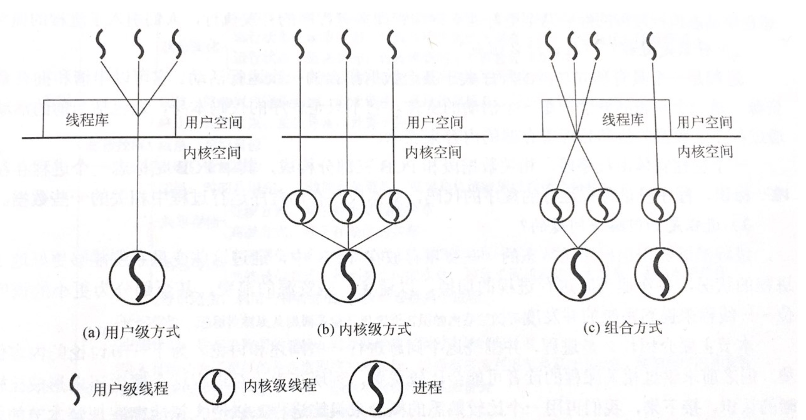
多线程模型
多对一模型
多个用户级线程映射到一个内核级线程，线程管理在用户空间完成，用户级线程对操作系统不可见
优点：线程管理在用户空间进行，效率高
缺点：一个线程在使用内核服务时被阻塞，整个进程都会被阻塞；多个线程不能并行运行在多处理机上
一对一模型
每个用户级线程映射到一个内核级线程
优点：当一个线程被阻塞后，允许另一个线程继续执行，并发能力强
缺点：每创建一个用户级线程需要创建一个内核级线程，开销大，影响应用程序性能
多对多模型
将n个用户级线程映射到m个内核级线程上，且$m \leq n$
特点：集两者之所长
处理机调度
调度的概念
调度的基本概念
处理机调度是对处理机进行分配，即从就绪队列中按照一定的算法（公平、高效）选择一个进程并将处理机分配给它允许，以实现进程并发地执行。
调度的层次
作业调度（高级调度）
内存与辅存之间的调度，每个作业只调入一次、调出一次，执行频率低
内存调度（中级调度）
提高内存利用率和系统吞吐量，将暂时不能允许的进程调至外存等待，进入“挂起态”
进程调度（低级调度）
按照某种方法和策略从就绪队列中选取一个进程，将处理机分配给它，频率很高
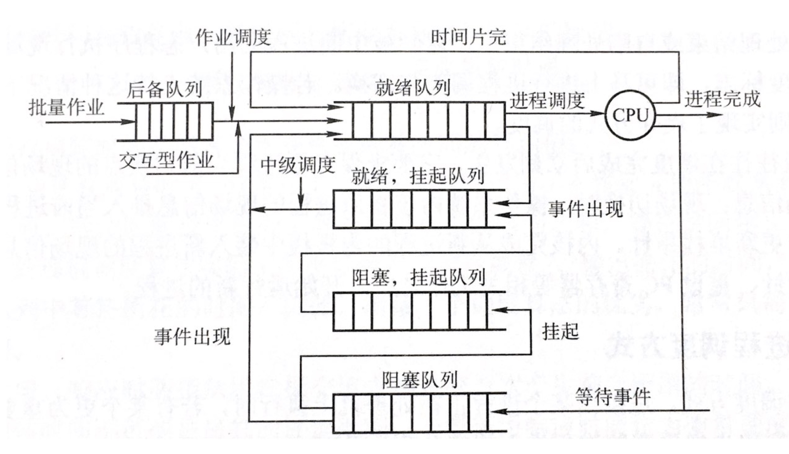
调度的切换
进程调度和切换程序是操作系统内核程序。请求调度的事件发生后，才可能运行线程调度程序，调度了新的就绪程序后，才会进行进程间的切换。理论上这三者顺序执行。
不能进行进程的调度和切换的情况
1.在处理中断的过程中
2.进程在操作系统内核程序临界区中
3.其他需要完全屏蔽中断的原子操作过程中
应该进行进程调度和切换的情况
1.发生引起调度且当前进程无法继续运行下去，可以马上进行调度与切换。若操作系统只在这种情况下进行进程调度，则是非剥夺调度
2.中断处理结束或自陷处理结束后，返回被中断进程的用户态程序执行现场前，若置上请求调度标志，即可马上进行进程调度与切换。若操作系统支持这种情况下的运行调度程序，则实现了剥夺方式的调度
调度的方式
非剥夺调度方式（非抢占方式）
一旦把CPU分配给一个进程，该进程就会保持CPU直到终止或转换为“等待态”
优点：实现简单、系统开销校，适用于大多数的批处理操作系统
缺点：不能用于分时系统和大多数实时心态
剥夺调度方式（抢占方式）
根据优先权、短进程优先、时间片原则等方式，暂停正在执行的进程，执行更为紧迫的进程
优点：提高系统吞吐量、提高响应效率
调度的基本准则
CPU利用率
尽可能使CPU保持“忙”状态，提高资源利用率
系统吞吐量
长作业会降低系统吞吐量，短作业能提高系统吞吐量
周转时间
是作业等待、就绪队列排队、处理机运行、输出输出操作花费时间总和
$周转时间 = 作业完成时间 - 作业提交时间$
$平均周转时间 = (作业1的周转时间 + ··· + 作业n的周转时间)/n$
$带权周转时间 = \frac{作业周转时间}{作业实际运行时间}$
$平均带权周转时间 = (作业1的带权周转时间 + ··· + 作业n的带权周转时间)/n$
等待时间
进程处于等处理机状态的时间之和
处理机调度算法不影响作业执行和输入输出时间，只影响作业在就绪队列中等待时间
响应时间
用户提交请求到系统首次产生响应所用的时间
交互式系统中，作为衡量算法重要标准之一
调度算法
先来先服务（FCFS）调度算法
可作用于作业调度和进程调度，属于不可剥夺算法
特点：算法简单，效率低；对长作业有利，对短作业不利；有利于CPU繁忙型作业，不利于I/O繁忙型作业
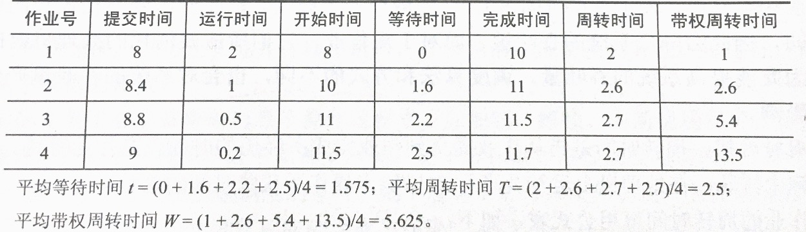
短作业优先（SJF）调度算法
平均等待时间、平均周转时间最少
特点：对长作业不利，会产生“饥饿”现象；未考虑作业的紧迫程度；按估计时间执行，并不能做到真正的短作业优先调度
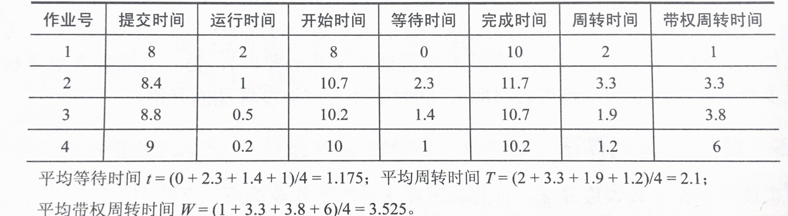
优先级（权）调度算法
可用于作业调度和进程调度
根据能否抢占划分
1.非剥夺式优先级调度算法
2.剥夺式优先级调度算法
根据优先级能否改变划分
1.静态优先级
2.动态优先级
进程优先级原则
1.系统进程 > 用户进程
2.交互式（前台）进程 > 非交互式（后台）进程
3.I/O型进程 > 计算型进程
高响应比优先调度算法
用于作业调度
$响应比R_p = \frac{等待时间 + 要求服务时间}{要求服务时间}$
1.作业的等待时间相同时，要求服务时间越短，响应比越高，有利于短作业
2.要求服务时间相同时，作业的响应比由其等待时间决定，等待时间越长，其响应比越高（FCFS）
3.对于长作业，作业的响应比可以随等待时间的增加而提高，等待时间足够长时，其响应比便可以很高，从而获得处理机，克服了“饥饿”现象，兼顾了长作业
时间片轮转调度算法
用于分时系统
时间片长短因素确定：系统的响应时间、就绪队列中的进程数目、系统的处理能力
多级反馈队列调度算法
动态调整进程优先级和时间片大小
实现思想
1.设置多个就绪队列，赋予不同优先级
2.赋予各个队列中进程执行时间片的大小各不相同。优先级越高的队列中，时间片越短
3.新进程进入内存后，首先将它放在第1级别队列的末尾，按FCFS调度，若它在无法在一个时间片内完成，将其放入第2级别队列末尾，重复上述操作，直至完成
4.仅当第i-1队列为空时，才执行第i级队列（i>1）
优点
终端型作业用户，短作业优先；短批处理作业用户，周转时间较短；长批处理作业用户，不会长期得不到处理
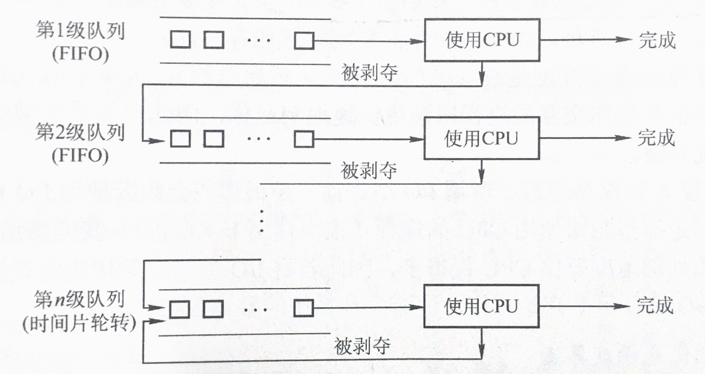
进程同步
进程同步的概念
在多道程序环境下，进程是并发执行的，不同进程之间存在着不同的相互制约关系，进程同步来协调这种制约关系
临界资源
一次仅允许一个进程使用的资源
在每个进程中，访问临界资源的那段代码称为“临界区”
临界资源的访问过程
1.进入区。设置正在访问临界区的标志，阻止其他进程同时进入
2.临界区。进程中访问临界资源的那段代码，又称临界段
3.退出区。清楚正在访问临界区的标志
4.剩余区。代码中的其余部分
同步（直接制约关系）
为完成某种任务而建立的两个或多个进程，这些进程因为需要在某些位置上协调它们的工作次序而等待、传递信息所产生的制约关系
互斥（间接制约关系）
同一时刻，只能有一个进程进入临界区使用临界资源，其他进程需要等待
1.空闲让进。临界区空闲时，可以允许一个请求进入临界区的进程立即进入临界区
2.忙则等待。当已有进程进入临界区时，其他试图进入临界区的进程必须等待
3.有限等待。对请求访问的进程,应保证能在有限的时间内进入临界区
4.让权等待。当进程不能进入临界区时，应立即释放处理机，防止进程忙等待
死锁
死锁的概念
定义
多个进程因竞争资源而造成的一种僵局（互相等待），若无外力作用，这些进程都将无法向前进
产生的原因
系统资源的竞争
对不可剥夺资源的竞争
进程推进顺序非法
请求和释放资源的顺序不当，进程$P_1、P_2$分别占用了资源$R_1、R_2$，而进程$P_1$申请资源$R_2$、进程$P_2$申请资源$R_1$时，两者都会因为所需资源被占用而阻塞
死锁产生的必要条件
1.互斥：一段时间内某资源仅允许一个进程所有
2.不剥夺：进程所获得的资源在未使用完之前不能被其他进程夺走，只能由自己来释放该资源
3.请求并保持：进程已经保持了至少一个资源，但请求了新的资源，该新的资源已被其他进程占用
4.循环等待：存在一个循环链，链中的每个进程获得的资源被下个进程所请求
死锁的处理策略
死锁预防
设置限制条件，破坏死锁四个必要条件中的一个或多个
避免死锁
在资源的动态分配过程中，用某种方法防止系统进入不安全状态，从而避免死锁
系统安全状态
假设系统中存在三个进程P1、P2、P3，共有12台磁带机。进程P1需要10台，P2需要4台，P3需要9台。假设在$T_0$时刻，进程P1、P2、P3已经分别获得5台、2台、2台，有3台为分配，则称$T_0$时刻是安全的，存在一个安全序列P2、P1、P3(不唯一)
1.即P2先请求2台空闲，使用后再归还，则有5台空闲
2.P1再请求5台空前，使用后归还，则有10台空闲
3.最后P3再请求7台
银行家算法
死锁的检测及解除
通过系统的检测机构及时地检测出死锁的发生
资源分配图
死锁定理
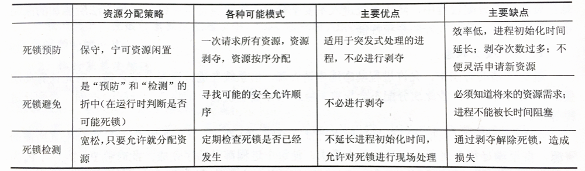
第三章 内存管理
内存管理的概念
定义
操作系统对内存的划分和动态分配
功能
内存空间的分配与回收
由操作系统完成主存储器空间的分配和管理，提高编程效率
地址转换
将逻辑地址转换成相应的物理地址
内存空间的扩充
利用虚拟存储技术、自动覆盖技术，从逻辑上扩充内存
存储保护
保证各道作业在各自的存储空间内运行，互不干扰
内存管理的基本原理和要求
程序装入和链接
步骤
1.编译：由编译程序将用户源代码编译成若干目标模块
2.链接：由链接程序将编译后形成的一组目标模块及所需的库函数链接在一起。形成一个完整的装入模块
3.装入：由装入程序将装入模块装入内存运行
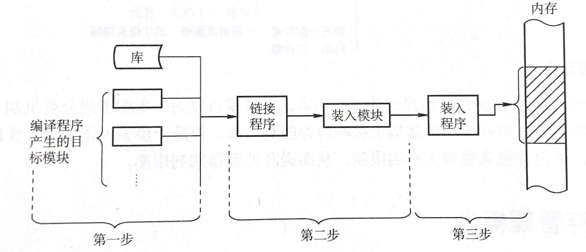
链接的三种方式
1.静态链接
程序运行之前，先将各目标模块及它们所需的库函数链接称一个完整的可执行程序，之后不再拆开
2.装入时动态链接
将用户源程序编译后所得的一组目标模块，在装入内存时，边装入边链接
3.运行时动态链接
对某些目标模块的链接，是在程序执行中需要该目标模块时才进行的
优点：便于修改、更新、实现对目标模块的共享
装入的三种方式
1.绝对装入
在编译时，知道程序驻留在内存的位置，编译程序产生绝对地目标地址，绝对装入程序按照装入模块中的地址，将程序和数据装入内存
特点：只适用于单道程序环境、逻辑地址和实际内存地址相同
2.可重定位装入(静态重定位)
根据内存的当前情况，将装入模块装入内存的适当位置，装入时对目标程序中指令和数据进行修改
特点：一个作业装入内存时，必须给它分配要求的全部内存空间，否则无法装入；作业运行期间不能在内存中移动也不能再申请内存
3.动态运行时装入(动态重定位)
装入程序把装入模块装入内存后，并不立即把装入模块中的相对地址转换成绝对地址，而是把这种地址转换推迟到程序真正要执行时才进行。这种方式需要一个重定位寄存器的支持
特点：装入内存后的所有地址都是相对地址；可以将程序分配到不连续的存储区中；运行时可以动态申请分配内存；可以向用户提供一个比存储空间大得多的地址空间
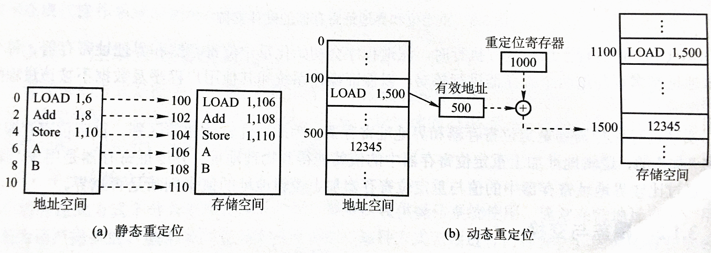
逻辑地址空间和物理地址空间
逻辑地址（相对地址）：编译后，每个目标模块都从0号单元开始编址
物理地址：内存中物理单元的集合，它是地址转换的最终地址
地址重定位：装入程序将可执行代码装入内存时，通过地址转换将逻辑地址转换成物理地址
内存保护
内存分配前，需要保护操作系统不受用户进程的影响，同时保护用户进程不受其他用户进程的的影响。可采取以下两种方法
1.在CPU中设置一对上、下限寄存器，存放用户作业在主存中的下限和上限地址，每当CPU要访问一个地址时，分别和两个寄存器的值相比，判断有无越界
2.采用重定位寄存器（基址寄存器）和界地址寄存器（限长寄存器）实现保护。重定向寄存器含最小的物理地址值，界地址寄存器含逻辑地址的最大值。每个逻辑地址值必须小雨界地址寄存器；内存管理机构动态地将逻辑地址与界地址寄存器进行比较，若未发生地址越界，则加上重定位寄存器的值后映射成物理地址，再送交内存单元。
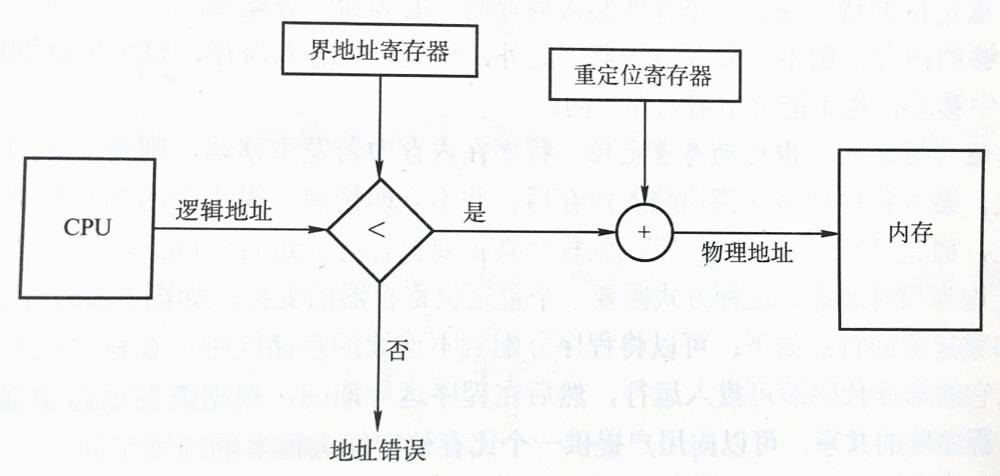
覆盖与交换
覆盖（同一个程序或进程中）
基本思想
由于程序运行时并非任何时候都要访问程序及数据的各个部分（尤其是大程序），因此可把用户空间分成一个固定区或若干覆盖区。将经常活跃的部分放在固定区，其余部分按调用关系分段。首先将哪些即将要访问的段放入覆盖区，其他段放在外存中，在需要调用前，系统再将其掉入覆盖区，替换覆盖区中原有的段。
特点
打破了必须将一个进程的全部信息装入主存后才能运行的限制；但当同时运行程序的代码量大于主存时仍不能运行；内存中能够更新的地方只有覆盖区的段，不在覆盖区的段会常驻内存
交换（不同进程、作业之间进行）
基本思想
把处于等待（或在CPU调度原则下被剥夺运行权利）的程序从内存移到辅存，把内存的空间腾出来（换出）；把准备好竞争CPU运行的程序从辅存移到内存（换入）。中级调度就是采用交换技术
需注意问题
1.交换需要备份存储，通常是快速磁盘。它必须足够大，并提供对这些内存映像的直接访问
2.影响交换时间的主要是转移时间。转移时间与所交换的内存空间成正比
3.若换出进程，必须确保该进程完全处于空闲状态
4.交换空间通常作为磁盘的一整块，且独立于文件系统，因此使用起来可能很快
5.交换通常在许多进程运行且内存空间吃紧时开始启动，而系统负荷降低久暂停
6.普通的交换使用不多，但交换策略的某些变体在许多系统中仍发挥作用
连续分配管理方式
为一个用户程序分配一个连续的内存空间
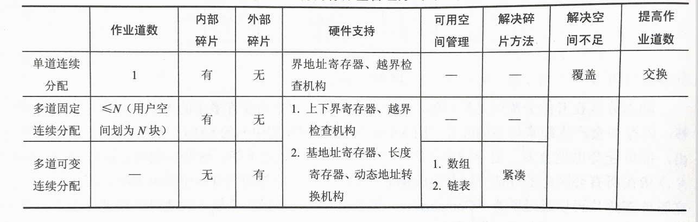
单一连续分配
内存在此方式下分为系统区和用户区
系统区仅供操作系统使用，低地址部分；用户区是为用户提供的、除系统之外的内存空间
无须进行内存保护，内存中永远只有一道程序，不会发生访问越界和干扰其他程序
优点
简单、无外部碎片，可采用覆盖技术，不需要额外技术支持
缺点
只能用于单用户、单任务操作系统，有内部碎片，存储器利用率极低
固定分区分配
将用户内存空间划分为若干固定大小的区域，每个分区只能装入一道作业。当有空闲分区时，便可再从外存的后备作业队列中选择适当大小的作业装入该分区，如此循环
分区大小相等：用于利用一台计算机区控制多个相同对象的场合，缺乏灵活性
{8M 8M 8M 8M 8M 8M 8M}
分区大小不等：划分为多个较小分区、适量中等分区、少量大分区
{2M 4M 6M 8M 8M 12M 16M}
分区说明表
包括每个分区的始址、大小、状态（是否分配）
缺点
1.程序可能太大放不进任何一个分区，需要采用覆盖技术来使用内存
2.主存利用率低，程序小时用不完内存分区空间，产生“内部碎片”
动态分区分配（可变分区分配）
不预先划分内存，而是在进程装入内存时，根据进程的大小动态地建立分区，并使分区的大小正好适合进程的需要
缺点
随着进程的换入/换出，会产生“外部碎片”，需要通过紧凑技术解决，相对费时（如下图）
动态分区的分配策略
1.首次适应算法
空闲分区以地址递增的次序链接，按顺序找到第一个满足的空闲分区
特点：最简单、最快、最好；低地址部分出现很多的空闲空间，增加每次查找时的开销
2.最佳适应算法
空闲分区按容量递增的次序链接，按顺序找到第一个满足的空闲分区
特点：性能很差；会产生最多的外部碎片
3.最坏适应算法（最大适应算法）
空闲分区按容量递减次序链接，按顺序找到第一个满足的空闲分区
特点：性能很差，很快导致没有大内存块
4.邻近适应算法（循环首次适应算法）
在首次适应算法的基础上，从上次查找结束的位置开始继续查找
特点：常常导致在内存的末尾分配空间，比首次适应算法结果要差
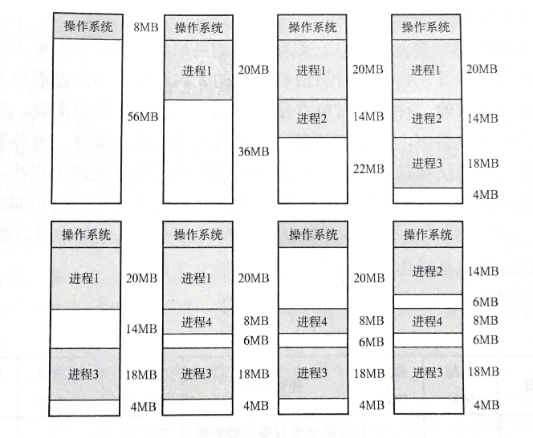
非连续分配管理方式
基本分页存储管理方式
基本思想
把主存空间划分为大小相等且固定的快，块相对较小，作为主存的基本单位。每个进程也以块为单位进行划分，进程在执行时，以块为单位逐个申请主存中的块空间
特点
不产生外部碎片；块的大小相对分区小很多；进程只会在为最后一个不完整的块申请一个主存空间时，才产生主存碎片（页内碎片），一维地址空间
基本概念
1.页面和页面大小
页：进程中的块
页框（页帧）：内存中的块
块：外存中的单位划分
页面大小是2的整数冥，页面过小，占用内存大，降低页面转入/转出效率；页面过大，页内碎片增多，内存利用率低
2.地址结构
页号P，页内偏移量W
地址长度32位，0～11位为页内地址，即每页4KB；12～31位为页号，地址空间最多允许$2^{20}$页

3.页表
用于找到进程的每个页面对应的物理块，记录页面在内存中对应的物理块号，存放在内存中
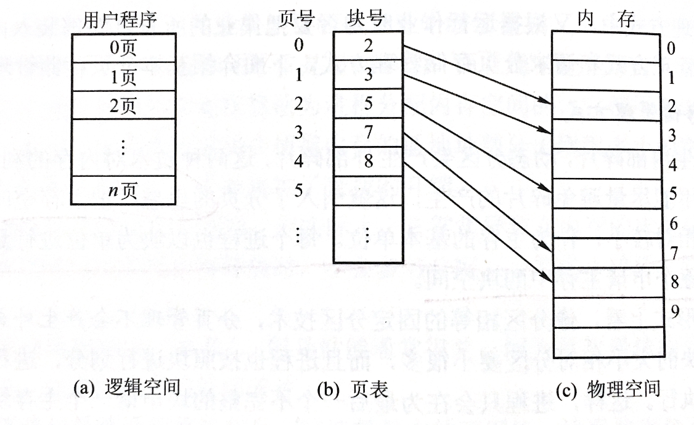
基本地址变换机构
将逻辑地址转换为内存中的物理地址，借助页表实现
设页面大小为L，逻辑地址A到物理地址E的变换过程如下（十进制），硬件自动完成
1.计算页号$P（P = A/L）$和页内偏移量$W（W = A \% L）$
2.比较页号$P$和页表长度M，若$P \geq M$，则产生越界中断，否则继续执行
3.页表中页号$P$对应的页表项地址 = 页表始址$F + $页号$P \times $页表项长度，取出该页表项内容$b$（物理块号）
4.计算$E = b \times L + W$，用得到的物理地址$E$去访问内存
页表长度：一共有多少页；页表项长度：页地址所占存储空间
例如页面大小L为1KB，页号2对应的物理地址b=8，计算逻辑地址A=2500的物理地址E
$P = 2500/1K = 2,W = 2500\%1K = 452,查找到页号2对应的物理地址块号为8,E=8 \times 1024 + 452 = 8644$
存在的问题
1.每次访存操作都需要进行逻辑地址到物理地址的转换，地址转换必须足够快，否则访存速度会降低
2.每个进程引入页表，用于存储映射机制，页表不能太大，否则内存利用率会降低
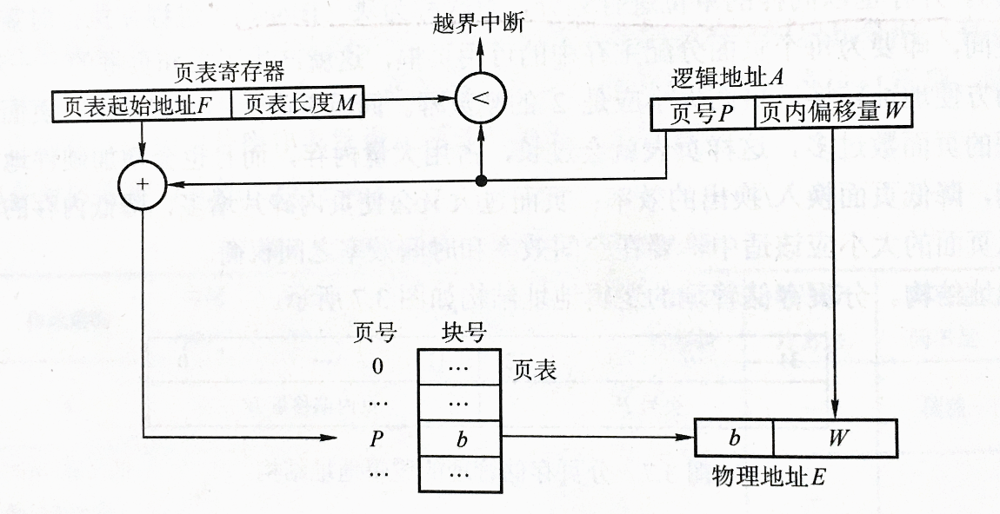
具有快表的地址变换机构
快表（相联存储器、TLB）
具有并行查找能力的高速缓冲存储器，用来存放当前访问的若干页表项，加速地址变换过程
命中率达90%以上，局部性原理
慢表
主存中的表，（有些处理机设计为快表和慢表同时查找，若在快表中查找成功则终止慢表的查找）
变换过程
1.CPU给出逻辑地址后，由硬件进行地址转换，将页号送入高速缓存寄存器，并将此页号与快表中的所有页号进行比较
2.若找到匹配的页号，说明所要访问的页表项在快表中，则直接从中取出该页对应的页框号，与页内偏移量拼接形成物理地址。这样，存取数据仅一次访存即可
3.若未找到，则需要访问主存中的页表，在读出页表项后，应同时将其存入快表，以便后面可能的再次访问。但若快表已满，则必须按照一定的算法对旧的页表项进行替换
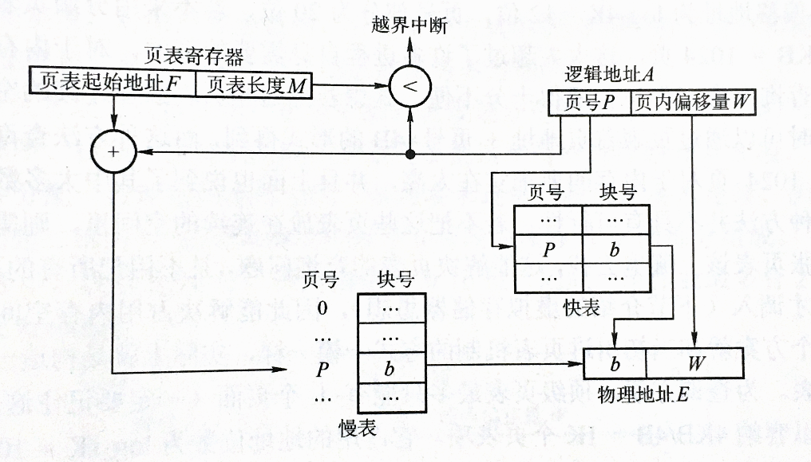
两级页表
页表的页表
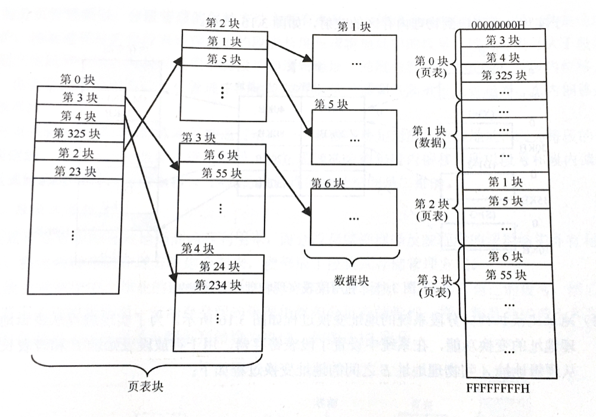
基本分段存储管理方式
分段
段管理方式按照用户进程中的自然段划分逻辑空间，段号S，段内偏移量W，二维地址空间
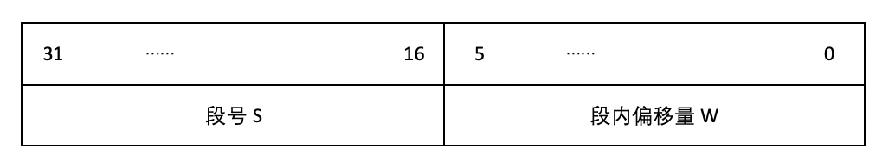
段表
逻辑空间与内存空间映射的段表，记录该段内存中的始址和长度
利用段表实现物理内存区映射
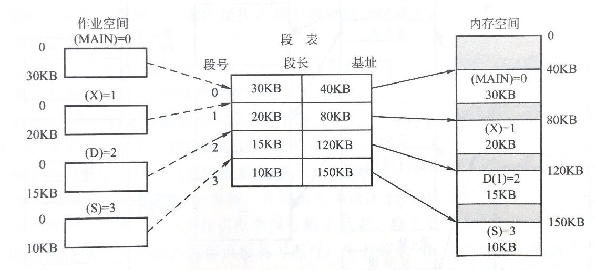
地址变换机构
1.从逻辑地址A中取出前几位为段号$S$，后几位为段内偏移量$W$，注意在段式存储管理的题目中，逻辑地址一般以二进制数给出，而在页式存储管理中，逻辑地址一般以十进制数给出
2.比较段号$S$和段表长度$M$，若$ S \geq M $，则产生越界中断，否则继续执行
3.段表中段号$S$对应的段表项地址 $=$ 段表始址$F +$段号$S \times $段表项长度，取出该段表项的前几位得到段长$C$。若段内偏移量$ \geq C $，则产生越界中断，否则继续执行。
4.取出段表项中该段的始址$b$，计算$E = b + W$，用得到的物理地址$E$去访问内存
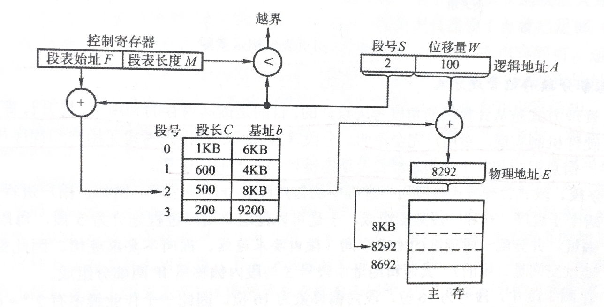
段的共享与保护
纯代码（可重入代码）：不属于临界资源
纯代码和不能修改的数据可以共享，可修改的代码和数据不能共享
分段管理保护的方法
1.存取控制保护
2.地址越界保护：段号大于段表长度；段内位移大于段长 （分页管理中页内偏移不可能越界）
段页式管理方式
基本思想
结合了页式存储能高效提高内存利用率和段式存储有利于段的共享的优点。作业的地址空间首先被分为若干逻辑段，每段都有自己的段号，然后将每段分成若干大小固定的页。对内存空间的管理仍然和分页存储管理一样，将其分成若干和页面大小相同的存储块，对内存的分配以存储块为单位
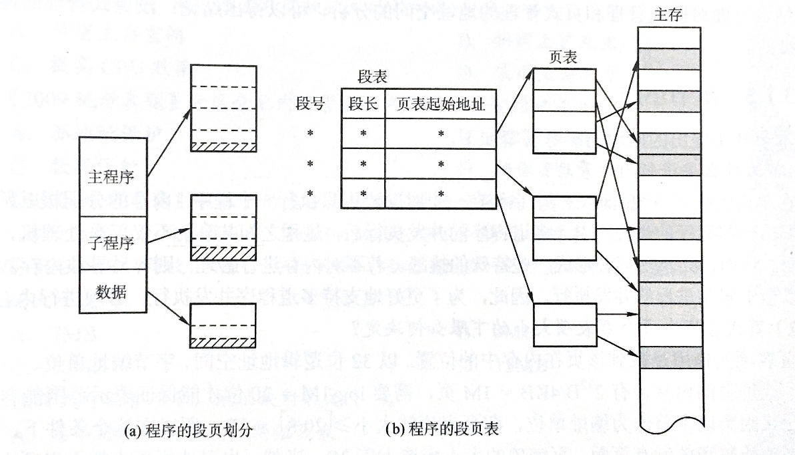
逻辑地址
段号S，页号P，页内偏移量W
段表表项中至少包括段号、页表长度、页表始址
页表表项中至少包括页号、块号
段表寄存器，指出作业的段表始址、段表长度
一个进程中，段表只有一个，页表可能有多个
转换过程
1.通过段表查到页表地址
2.通过页表找到页帧号
3.形成物理地址
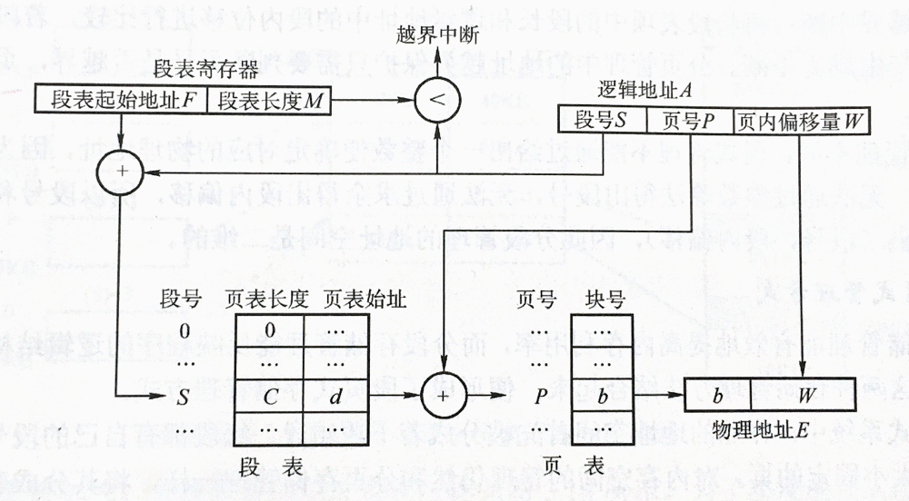
特点
一次访问实际需要访问三次主存
可以利用快表加速查找，关键字由段号、页号组成，值是对于的页帧号、保护码
地址空间是二维的
虚拟内存管理
基本概念
传统存储管理方式的特征
一次性
必须一次性全部装入内存后，才能开始运行
驻留性
作业被装入内存后，就一直驻留在内存中，其任何部分不会被换出，直至作业结束
局部性原理
时间局部性
程序中的某条指令一旦执行，不久后该指令可能再次执行
某数据被访问过，不久后该数据可能再次被访问
（程序中存在着大量的循环操作）
空间局部性
一旦程序访问了某个存储单元，在不久后，其附近的存储单元也将被访问
（指令通常是顺序存放、顺序执行的，数据是向量、数组、表等形式簇聚存储的）
虚拟存储器的定义和特征
定义
程序装入时，一部分装入内存，其余留在外存。程序执行过程中，访问的信息不在内存时，由操作系统将所需要的部分调入内存，继续执行。对用户完全透明
特征
1.多次性
无须在作业运行时一次性全部装入内存，分成多次调入内存
2.对换性
无须在作业运行时一直常驻内存，在运行过程中换入/换出
3.虚拟性
从逻辑上扩充内存的容量，使用户所看到的内存容量远大于实际内存容量
虚拟内存技术的实现
采用连续分配方式时，会使相当一部分内存都处于暂时或“永久”空闲状态，造成浪费，因此虚拟内存的实现要建立在离散分配的内存管理方式基础上
虚拟内存实现的三种方式
1.请求分页存储管理
2.请求分段存储管理
3.请求段页式存储管理
硬件支持
1.一定容量的内存和外存
2.页表机制（或段表机制），作为主要的数据结构
3.中断机构，当用户要访问的部分尚未掉入内存时，产生中断
4.地址变换机构，逻辑地址到物理地址的变换
请求分页管理方式
页表
在基本分页存储管理方式的基础上增加了4个字段
状态位P
用于指示该页是否已调入内存，供程序访问时参考
访问字段A
用于记录本页在一段时间内被访问的次数，或记录本页最近已有多长时间未被访问，供置换算法换出页面时参考
修改位M
标识该页在调入内存后是否被修改过
外存地址
用于指出该页在外存上的地址，通常是物理块号，调入该页时参考
缺页中断机构
请求分页系统中，每当访问的页面不在内存中，产生一个缺页中断，请求操作系统将所缺的页调入内存
缺页中断作为中断，同样经历CPU环境、分析中断原因、转入缺页中断处理程序、恢复CPU环境，除此之外还有两个区别
1.在指令执行期间而非一条指令执行完后产生和处理中断信号，属于内部中断
2.一条指令在执行期间，可能产生多次缺页中断
地址变换机构
变换过程
1.先检索快表
2.若找到要访问的页，修改页表项中的访问位（写指令还需要重置修改位），然后利用页表项中给出的物理块号和页内地址形成物理地址
3.若未找到该页的页表项，到内存中去查找页表，再比对页表项中状态位P，看该页是否已调入内存，未调入则产生缺页中断，请求外存把该页调入内存
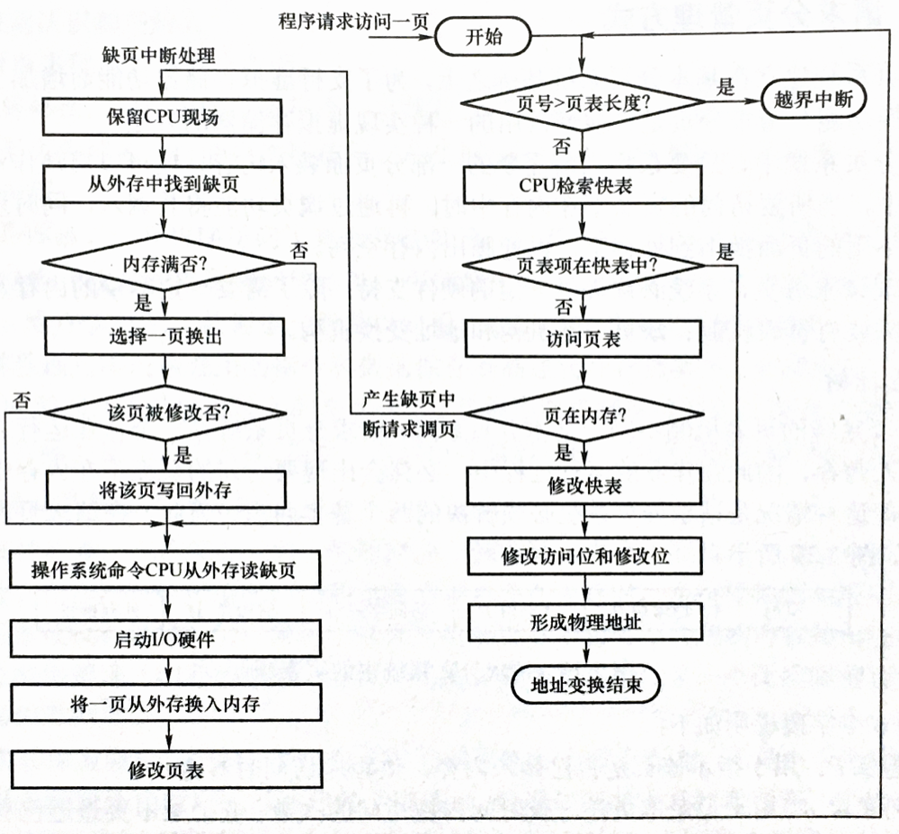
页面置换算法
最佳（OPT）算法
淘汰以后永不使用或是在最长时间内不再被访问的页面，保证最低的缺页率
无法预知哪个页面最长时间不被访问，故该算法无法实现
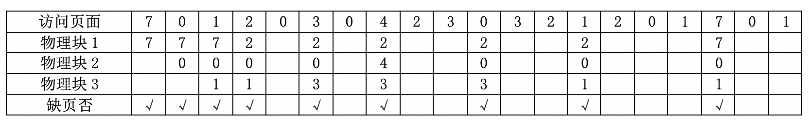
先进先出（FIFO）算法
淘汰最早进入内存的页面，即在内存中驻留时间最久的页面
队列类算法
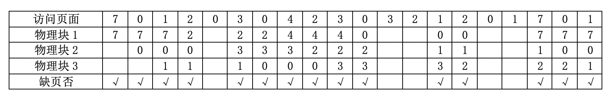
FIFO算法会出现分配的物理块数增大而页故障数不减反增的异常现象，称为Belady异常（奇异现象）
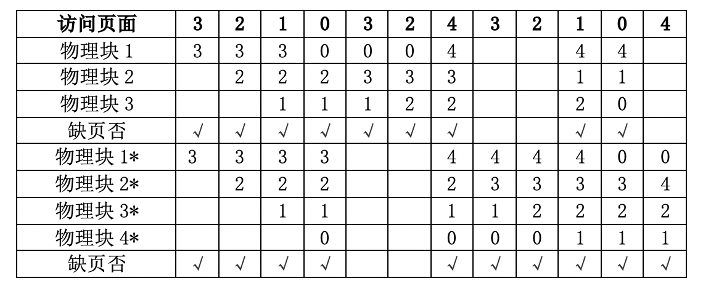
最近最久未使用（LRU）算法
淘汰最近最长时间未访问的页面
堆栈类算法
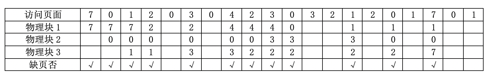
时钟（CLOCK）置换算法（最近未用算法、NRU）
简单的CLOCK算法
每帧关联一个附加位，称为使用位
改进型CLOCK算法
在使用位的基础上再增加一个修改位，则每帧处在以下四种情况之一
1.最近未被访问，也未被修改（u = 0，m = 0）
2.最近被访问，但未被修改（u = 1，m = 0）
3.最近未被访问，但被修改（u = 0，m = 1）
4.最近被访问，被修改（u = 1，m = 1）
算法步骤
1.从指针的当前位置开始，扫描帧缓冲区。在这次扫描过程中，对使用位不做任何修改。选择遇到的第一个帧（u = 0，m = 0）用于替换
2.若“1”步骤失败，则重新扫描。选择遇到的第一个帧（u = 0，m = 1）用于替换。在这个扫描过程中，将所有跳过的帧的使用位置0（u = 0）
3.若“2”步骤失败，则指针将回到它的最初位置，且集合中所有帧的使用位均为0（u = 0）。重复“1”步骤，并且若有必要，重复“2”步骤，以便找到可供替换的帧
刚开始扫描时指针指向的页面
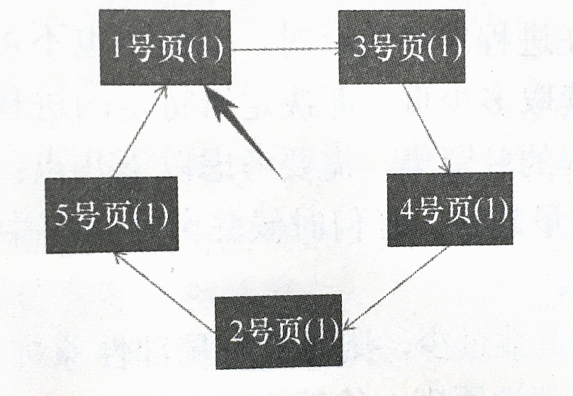
第一轮扫描的过程
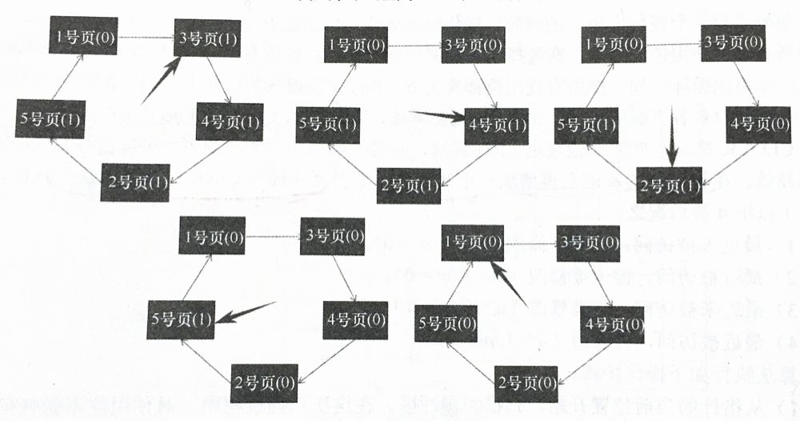
第二轮扫描后指针指向的页面
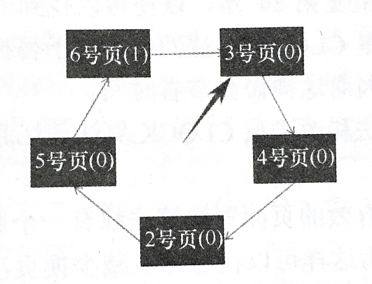
页面分配策略
驻留集
定义
给一个进程分配的物理页框的集合
考虑因素
1.分配给一个进程的存储量越小，任何时候驻留在主存中的进程数就越多，从而可以提高处理机的时间利用效率
2.若一个进程在主存中的页数过小，则尽管有局部性原理，页错误率仍然会相对较高
3.若页数过多，则由于局部性原理，给特定的进程分配更多的主存空间对该进程的错误率没有明显的影响
采用策略
1.固定分配局部置换
为每个进程分配一定数目的物理块，整个运行期间不改变
太少会频繁出现缺页中断；太多会使CPU和其他资源利用率下降
2.可变分配全局置换
为每个进程分配一定数目的物理块，操作系统自身也保持一个空闲物理块队列
比固定更加灵活，但盲目给进程增加物理块，会导致系统多道程序的并发能力下降
3.可变分配局部置换
为每个进程分配一定数目的物理块，当发生缺页时，只允许该进程在内存的页面中选出一页换出，因此不会影响其他进程的运行。若进程运行中频繁缺页，系统再分配物理块；反之，减少物理块
调入页面的时机
预调页策略（运行前调入）
将预计在不久之后便会被访问的页面预先调入内存
成功率约50%；用于进程的首次调入，由程序员指出
请求调页策略（运行期间调入）
进程在运行中需要访问的页面不在内存而提出请求，由系统将所需页面调入内存
每次只调入一页，调入/调出页面数花费I/O过多开销
从何处调入页面
请求分页系统的外存分为两部分
对换区
存放对换页面，采用连续分配方式
文件区
存放文件，采用离散分配方式
1.系统拥有足够的对换区空间
可以全部从对换区调入所需页面，运行前需将与该进程有关的文件从文件区复制到对换区
2.系统却受足够的对换区空间
不会被修改的文件直接从文件区调入；换出页面时，不换出未被修改的页面
可能被修改的部分，换出时调到对换区，需要时从对换区调入
3.UNIX方式
与进程有关的文件都放在文件区，未运行过的页面都从文件区调入
曾经运行过但被换出的页面，放在对换区
抖动（颠簸）
刚刚换出（换入）的页面马上又要换入（换出）主存
原因：某个进程频繁访问的页面数目高于可用的物理页帧数目
工作集
某段时间间隔内，进程要访问的页面集合
$1,4,(2,4,5,3,2,)_{t_1}2,1,1,1,3,4,5,(4,2,1,1,3,)_{t_2}3$
$t_1$时刻工作集窗口大小为5，工作集为{2,3,5}
$t_2$时刻工作集窗口大小为5，工作集为{1,2,3,4}
驻留集大小一般大于工作集大小，可以防止抖动现象
地址翻译*
第四章 文件管理
文件系统基础
文件的概念
文件的定义
以计算机硬盘为载体的存储在计算机上的信息集合，可以是文本文档、图片、程序等，是用户进行输入、输出中的基本单位
数据项
数据项是文件系统中最低级的数据组织形式
1.基本数据项：用于描述一个对象的某种属性的一个值，如姓名、日期、证件号等，是数据中命名的最小逻辑数据单位，即原子数据
2.组合数据项：由多个基本数据项足组成
记录
一组相关的数据项的集合，用于描述一个对象在某方面的属性，如一名考生的报名记录包括姓名、出生日期、报考学校代号、身份证号等一系列域
文件
由创建者所定义的一组相关信息的集合，逻辑上分为有结构文件和无结构文件
有结构文件（记录式文件）：文件由一组相似的记录组成，如报考某学校的所有考生的报考信息记录
无结构文件（流式文件）：字符流，如一个二进制文件、字符文件
文件的属性
名称
文件名称唯一，以容易读取的形式存储
标识符
表示文件系统内文件的唯一标签，通常为数字，是对人不可读的一种内部名称
类型
被支持不同类型的文件系统所使用
位置
指向设备和设备上文件的指针
大小
文件当前大小（用字节、字或块表示），也可包含文件允许的最大值
保护
对文件进行保护的访问控制信息
时间、日期、用户标示
文件创建、上次修改和上次访问的相关信息，用于保护和跟踪文件的使用
文件的基本操作
创建文件
1.在文件系统中为文件找到空间
2.在目录中为新文件创建条目，该条目记录文件名称、在文件系统中的位置及其他可能的信息
写文件
执行一个系统调用，指明文件名称和要写入文件的内容
对于给定文件名称，系统搜索目录以查找文件位置
系统必须为该文件维护一个写位置的指针
每当发生写操作时，便更新写指针
读文件
执行一个系统调用，指明文件名称和要杜如文件块的内存位置
搜索目录以找到相关目录项
系统必须维护一个读位置的指针
每当发生读操作时，更新读指针
读和写操作使用同一指针，节省了空间和降低系统复杂度
文件重定位（文件寻址）
按某条件搜索目录，将当前文件位置设置为给定值，并且不会读、写文件
删除文件
先从目录中找到要删除文件的目录项，使之成为空项，然后回收该文件所占用的存储空间
截断文件
允许文件所有属性不变，并删除文件内容，将其长度设为0并释放其空间
文件的打开与关闭
打开
open 指针，返回一个指向打开文件表中的一个条目的指针
Open Count，记录多少进程打开了该文件
close，关闭操作，使得count减少
打开文件的关联信息
1.文件指针
系统跟踪上次的读写位置作为当前文件位置的指针，这种指针对打开文件的某个进程来说是唯一的，因此必须与磁盘文件属性分开保存
2.文件打开计数
文件关闭时，操作系统必须重用其打开文件表条目，否则表内空间会不够用。因为多个进程可能打开同一个文件，所以系统在删除打开文件条目之前，必须等待最后一个进程关闭文件。计数器跟踪打开和关闭的数量，计数为0时，系统关闭文件，删除该条目
3.文件磁盘位置
绝大多数文件操作都要求系统修改文件数据。该信息保存在内存中，以免为每个操作都从磁盘中读取
4.权限访问
每个进程打开文件都需要一个访问模式（创建、只读、读写、添加等）。该信息保存在进程的打开文件表中，以便操作系统能够允许或拒绝之后的I/O请求
文件的逻辑结构
无结构文件（流式文件）
无结构文件将数据按顺序组织成记录并积累、保存，它是有序相关信息项的集合，以字节（Byte）为单位
访问只能通过穷举搜索的方式
适合对基本信息单位操作不多的文件采用该结构，源程序文件、目标代码文件等
有结构文件（记录时文件）
顺序文件
文件中的记录顺序排列，通常是定长，访问时需要舒徐搜索文件
1.串结构
按存入的时间先后排序，最先存入的作为第1条记录
2.顺序结构
所有记录按关键词排序
索引文件
对于定长记录文件，查找第i条记录，$A_i = i \times L$
对于变长记录文件，查找第i条记录，$A_i = \sum_{i = 0}^{i - 1}L_i + i$
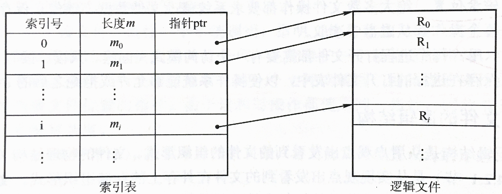
索引顺序文件
将顺序文件中的所有记录分为若干组，为顺序文件建立一张索引表，在索引表中为每组中的第一条记录建立一个索引项，其中含有该记录的关键字值和指向该记录的指针
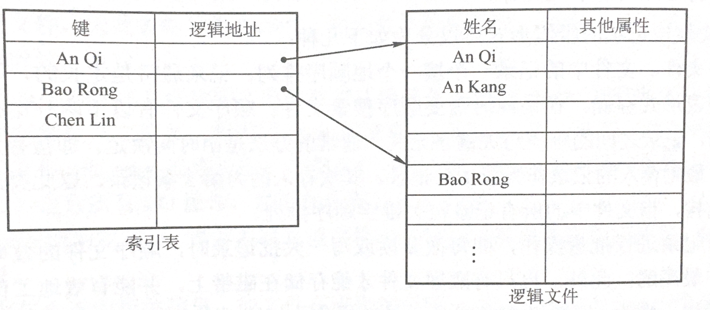
直接文件（散列文件）
给定记录的键值或通过散列函数转换的键值直接决定记录的物理地址，没有顺序的特性
目录结构
文件控制块和索引结点
文件控制块（FCB）
存放控制文件需要的各种信息的数据结构，以实现“按名存取”
FCB的有序集合称为文件目录，一个FCB就是一个文件目录项
FCB包含的信息
1.基本信息。文件名、文件的物理地址、文件的逻辑结构、文件的物理结构等
2.存取控制信息。文件存取权限
3.使用信息。文件建立时间、修改时间
索引结点
有的操作系统（UNIX）采用文件名和文件描述文件信息分开的方法
文件描述信息单独形成一个称为索引结点的数据结构 ，简称i结点
一个FCB大小为64B，盘块大小1KB，每个盘块存放16个FCB（连续存放）
在UNIX中，一个目录项仅占16B，其中14B是文件名，2B是i结点，1KB可以存放64个FCB
磁盘索引结点（UNIX）
存放在磁盘上的索引结点
1.文件主标识符。拥有该文件的个人或小组的标识符
2.文件类型。普通文件、目录文件、特别文件
3.文件存取权限。各类用户对该文件的存取权限
4.文件物理地址。每个索引结点有13个地址项，iaddr(0)~iaddr(12)，它们直接或间接方式给出数据文件所在盘块的编号
5.文件长度。以字节为单位
6.文件链接计数。本文件系统中所有指向该文件的文件名的指针计数
7.文件存取时间。本文件最近被进程存取的时间、最近被修改的时间、索引结点最近被修改的时间
磁盘索引结点复制到内存的索引结点，增加以下内容
1.索引结点编号。用于标示内存索引结点
2.状态。指示i结点是否上锁或被修改
3.访问计数。每当有一进程要访问此i结点时，计数+1，访问结束-1
4.逻辑设备号。设置分别指向空闲链表和散列队列的指针
目录结构
目录层次上需要执行的操作
1.搜索。当用户使用一个文件时，需要搜索目录。找到该文件的对应目录项
2.创建文件。创建一个新文件时，需要在目录中增加一个目录项
3.删除文件。删除一个文件时，需要在目录中删除对应的目录项
4.显示目录。用户可以请求显示目录的内容，如显示该用户目录中的所有文件及属性
5.修改目录。某些文件属性保存在目录中，因而这些属性的变化需要改变对应的目录项
单级目录结构
整个文件系统只建立一张目录表，每个文件占一个目录项
特点：“按名存取”；查找速度慢；文件不便共享；不适用多用户操作系统
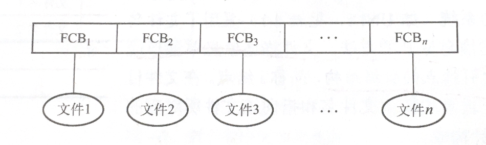
两级目录结构
主文件目录记录用户名及相应用户文件目录所在的存储位置
用户文件目录记录该文件的FCB
特点：缺乏灵活性，不能对文件分类
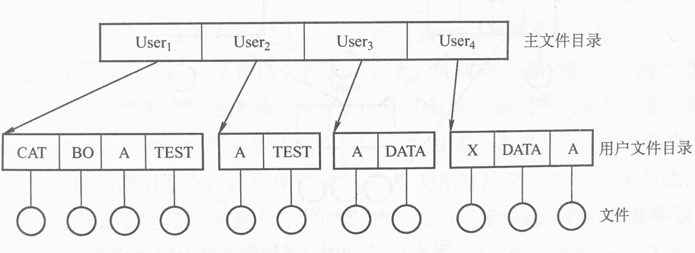
多级目录结构（树形目录结构）
绝对路径、相对路径
特点：方便分类，层次结构清晰，更有效进行文件管理和保护
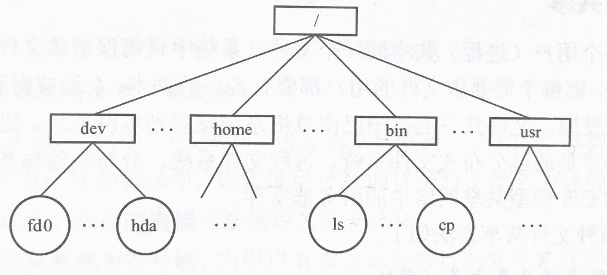
无环图目录结构
每个共享结点设置一个共享计数器，增加共享时，计数器+1；删除文件时，计数器-1，仅计数器 = 0时才算真正的删除，否则只是删除对该结点的共享链
特点：便于文件共享，系统管理复杂
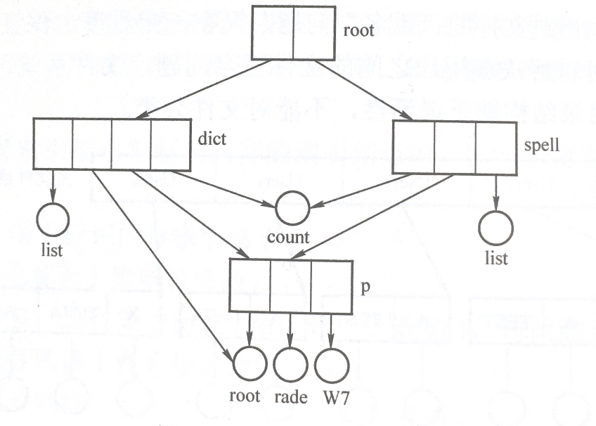
文件共享
多用户共享同一个文件，系统中只需要保留该文件的一个副本
基于索引结点的共享方式（硬链接）
count = 2 说明有两个用户目录项链接到本文件上，或者说有两个用户共享此文件
物理地址及其他文件属性放在索引结点中，不再放在目录项中
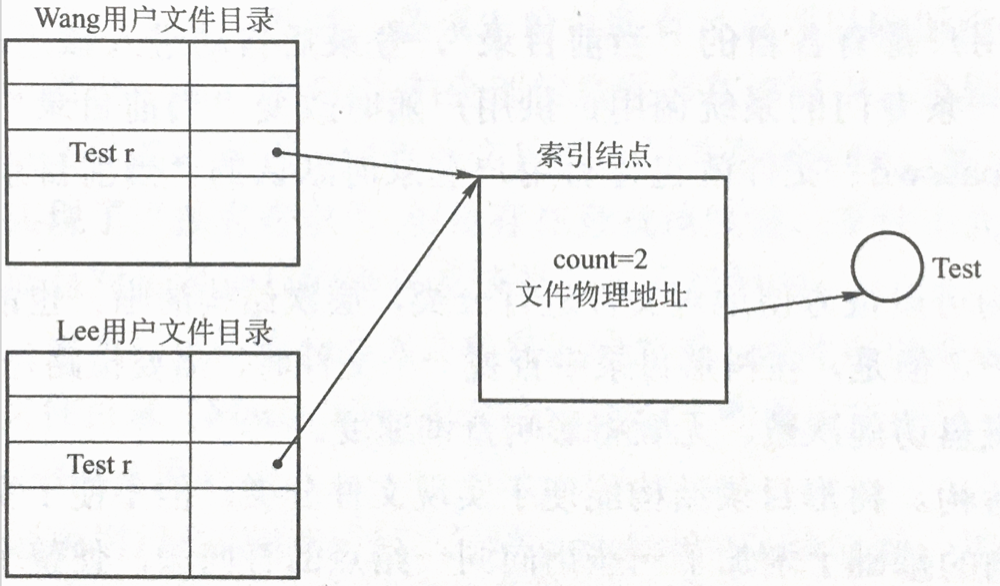
用户A创建一个新文件，是文件的拥有者，置count = 1
用户B要共享此文件，要在B的目录中增加一个目录项，并设置一个指针指向该文件的索引结点，count = 2
用户A不再需要该文件，count = 1，用户B仍然可以使用该文件
count = 0时，表示无人使用该文件，系统删除该文件
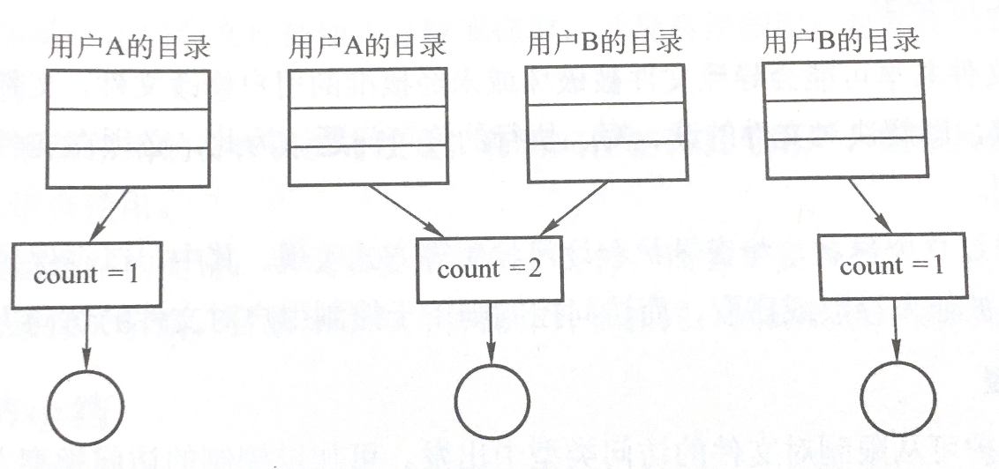
利用符号链实现文件共享（软链接）
用户B佛你共享用户A的一个文件F时，系统创建一个LINK类型的文件，也取名F，将F写入用户B的目录中，实现用户B的目录与文件F的链接。新文件中只包含被链接文件F的路径名。
用户B通过F的路径名访问文件F以实现共享
文件保护
访问类型
读 从文件中读
写 向文件中写
执行 将文件装入内存并执行
添加 将新信息天交到文件结尾部分
删除 删除文件，释放空间
列表清单 列出文件名和文件属性
访问控制
精简的访问列表
1.拥有者。创建文件的用户
2.组。一组需要共享文件且具有类似访问的用户
3.其他。系统内的所有其他用户
口令
用户在建立一个文件时提供一个口令，系统为其建立FCB时附上相应口令，同时告诉允许共享该文件的其他用户。用户请求访问时需提供相应的口令
优点：时间、空间开销少
缺点：口令直接存在系统内部，不安全
密码
用户对文件进行加密，文件被访问时需要使用该密钥
优点：保密性强，节省存储空间
缺点：编码、译码花费时间
文件系统实现
文件系统层次结构
用户调用接口
文件系统为用户提供与文件及目录有关的调用
由若干程序模块组成，每个模块对应一条系统调用，用户发出系统调用时，控制即转入相应的模块
文件目录系统
管理活跃文件目录表、管理读写状态信息表、管理用户进程的打开文件表、管理组织存储设备上的文件目录结构、调用下一级存取控制模块
存取控制验证
把用户的访问要求与FCB中指示的访问控制权限进行比较，确认访问的合法性，实现文件保护
逻辑文件系统与文件信息缓冲区
根据文件的逻辑结构将用户要读写的逻辑记录转换成文件逻辑结构内的相应块号
物理文件系统
把逻辑记录所在的相对块号转换成实际的物理地址
辅助分配模块
分配辅存空闲空间、回收辅存空间
设备管理程序模块
分配设备、分配设备读写用缓冲区、磁盘调度、启动设备、处理设备中断、释放设备读写缓冲区、释放设备
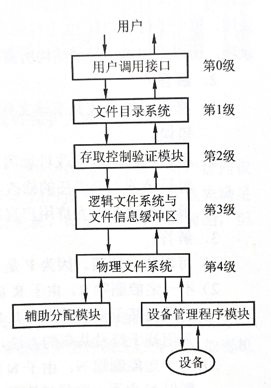
目录实现
线性表
实现简单、费时
哈希表
查找迅速、插入删除简单、哈希表长度固定以及哈希函数对表长的依赖性
文件实现
文件分配方式
连续分配
每个文件在磁盘上占有一组连续的块，支持顺序访问和直接访问
优点：实现简单、存取速度快
缺点：文件长度不宜动态增加，反复增删文件后产生外部碎片
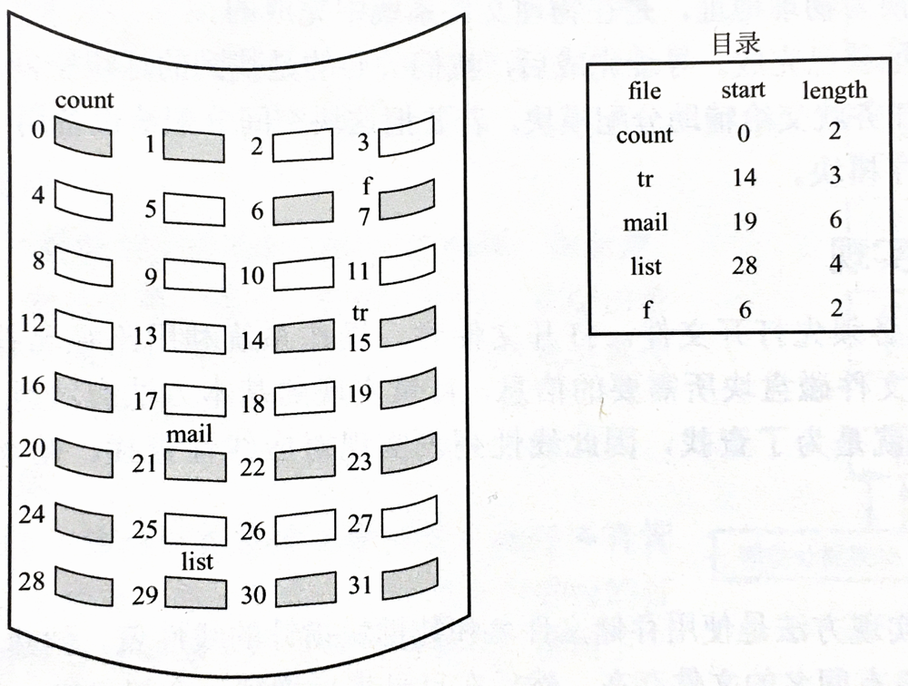
链接分配
采用离散分配方式，消除外部碎片
1.隐式链接
缺点：无法直接访问盘块，只能顺序访问；指针丢失或错误会导致文件数据丢失
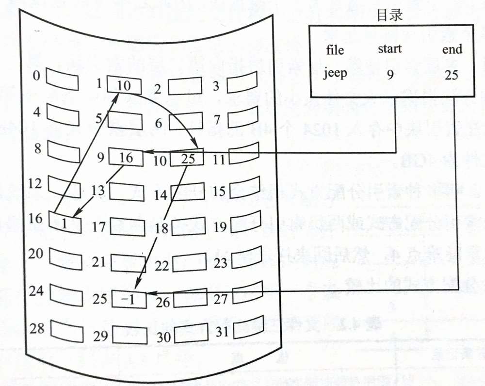
2.显式链接
把用于链接文件各物理块的指针，从每个物理块的块末尾中提取出来，显式地存放在内存的一张链接表中
索引分配
把每个文件的所有的盘块号集中放在一起构成索引块（表）
特点：支持直接访问；没有外部碎片；索引块的分配增大开销
每个文件都有一个索引块，太大会增大开销，太小会无法支持大文件，采用以下机制
1.链接方案
处理大文件时，将多个索引块链接起来
2.多层索引
第一层索引块指向第二层索引块，第二层索引块再指向文件块
3.混合索引
将多种索引分配方式相结合
访问第n条记录 优点 缺点 连续分配 访问磁盘1次 1.顺序存储时速度快
2.文件定长时可根据文件起始地址及记录长度进行随机访问1.文件存储要求连续的存储空间
2.会产生碎片
3.不利于文件的动态扩充链接分配 访问磁盘n次 1.可结局外存的碎片问题
2.动态增长方便1.只能按照文件的指针链顺序访问
2.查找时效率低
3.针信息存放消耗外存空间索引分配 m级访问磁盘m+1次 1.可以随机访问
2.文件易于增删1.索引表增加存储空间开销
2.索引表的查找策略对文件系统效率影响较大
文件存储空间管理
空闲表法
连续分配方式，与内存的动态分配类似，同样采用首次适应算法、循环首次适应算法等
序号 第一个空闲盘块号 空闲盘块数 1 2 4 2 9 3 3 — —
空闲链表法
将所有空闲盘区拉成一条空闲链
1.空闲盘块链
2.空闲盘区链
位示图法
二进制表示盘块使用情况，“0”代表空闲，“1”代表一已分配
盘块的分配
1.顺序扫描位示图，从中找出一个或一组值位“0”的二进制位
2.将找到的二进制位转换成与之对应的盘块号，“0”位于第i行、第j列，每行n位，则盘块号$b = n(i-1)+j$
3.修改位示图，令map[i，j]=1
盘块的回收
1.将回收盘块的盘块号转换成位示图中的行号和列号，$i=(b-1)/n+1,j=(b-1)\%n+1$
2.3.修改位示图，令map[i，j]=0
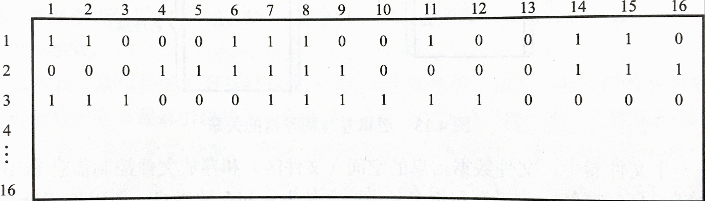
成组链接法
思想
把顺序的n个空闲扇区地址保存在第一个空闲扇区内，其后一个空闲扇区内则保存另一个顺序空闲扇区的地址，如此继续，直至所有空闲扇区均予以链接。
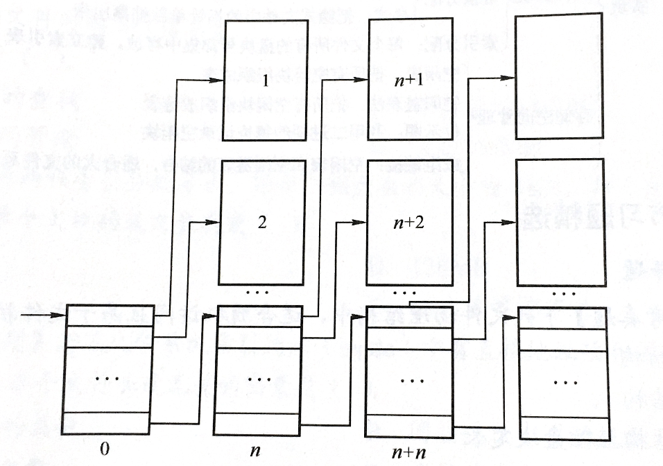
磁盘组织与管理
磁盘的结构
磁盘的存储能力受限于最内道的最大记录密度
柱面：所有盘片上相对位置相同的磁道组合
扇区示磁盘可寻址的最先存储单位
柱面号·盘面号·扇区号（或块号）
1.固定头磁盘
磁头相对于磁盘的径向方向固定，每个磁道一个磁头
2.活动头磁盘
磁头可移动，磁头臂可来回伸缩定位磁道
3.固定盘磁盘
磁盘永久固定在驱动器内
4.可换盘磁盘
磁盘可移动和替换
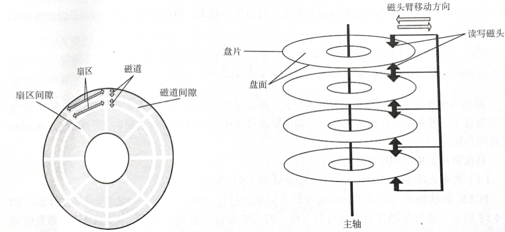
磁盘调度算法
一次磁盘读写操作时间因素
寻找时间$T_s$
活动头磁盘在读写信息前，将磁头移动到指定磁道所需时间
跨越n条磁道时间，启动磁臂时间s，磁盘驱动器速度有关常数m
$T_s = m \times n + s$
延迟时间$T_r$
磁头定位到某一磁道的扇区（块号）所需时间
磁盘旋转速度r
$T_r = \frac{1}{2r}$
传输时间$T_t$
从磁盘读出或向磁盘写入数据所需时间
读写字节数b，磁盘旋转速度r，一次磁道上的字节数N
$T_t = \frac{b}{rN}$
先来先服务（FCFS）算法
顺序访问
优点：公平、简单
缺点：平均寻址距离大，进应用在磁盘I/O较少的场合
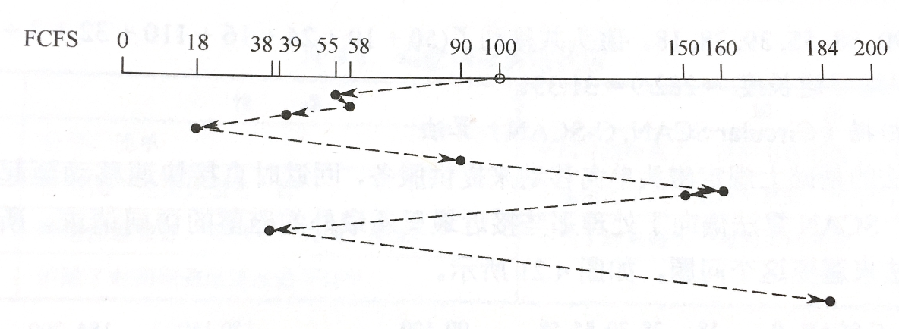
最短寻找时间优先（SSTF）算法
优先选择距离最近的磁道
优点：性能较FCFS好
缺点：不能保证平均寻道时间最短，“饥饿”现象
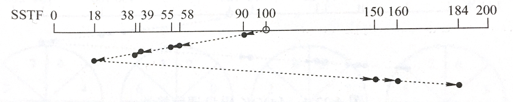
扫描（SCAN）算法（电梯调度算法）
选择当前磁头运动方向上距离最近的磁道
优点：寻道性能好，避免“饥饿”现象
缺点：不利于远离磁头一端的访问请求
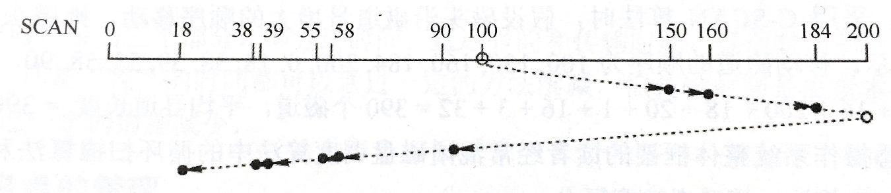
循环扫描（C-SCAN）算法
在扫描算法的基础上，规定磁头单向运动
优点：消除了对两端磁道请求的不公平
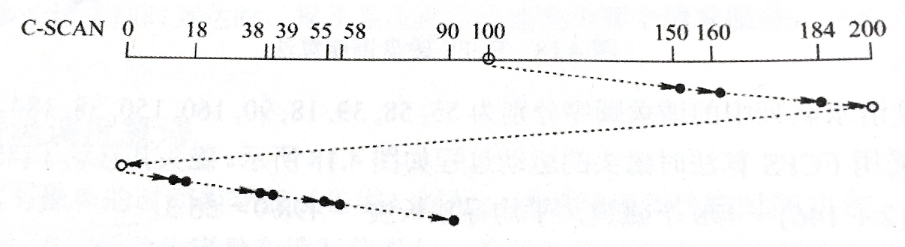
磁盘的管理
磁盘初始化
1.低级格式化（物理分区）
在磁盘能存储数据之前，将其分成扇区以便磁盘控制器能够读写
每个扇区由头、数据区域（512B）、尾部组成。头部、尾部包含磁盘控制器所用信息
2.逻辑格式化
创建文件系统，将初始的文件系统数据结构存储在磁盘上，这些数据结构包括空闲、已分配的空间、初始为空的目录
引导块
1.初始化程序（自举程序）
初始化CPU、寄存器、设备控制器、内存，启动操作系统
小部分保存在ROM中，大部分保存在磁盘启动块上
2.启动磁盘（系统磁盘）
拥有启动分区的磁盘
坏块
简单磁盘，可以手工处理
复杂磁盘，磁盘坏块链
硬件故障
第五章 输入/输出（I/O）管理
I/O管理概述
I/O设备
按使用特性分类
人机交互类外部设备
计算机、用户之间交互的设备。打印机、显示屏、鼠标、键盘等
速度慢，字节为单位传输
存储设备
存储程序和数据的设备。磁盘、磁带、光盘等
速度快，多字节组成的块为单位传输
网络通信设备
远程设备通信。网络接口、调制解调器
速度适中
按传输速率分类
低速设备
每秒几字节～每秒数百字节。键盘、鼠标
中速设备
每秒数千字节～每秒数万字节。行式打印机、激光打印机
高速设备
每秒数百千字节～每秒千兆字节。磁带机、磁盘机、光盘机
按信息交换单位分类
块设备
有结构设备。磁盘
传输速率较高、可寻址
字符设备
无结构设备。交互式终端机、打印机
传输速率低、不可寻址
I/O控制方式
程序直接控制方式
每次读一个字的数据，每次CPU对外设状态进行循环检查，直到确定该字处在I/O控制器的数据寄存器中
优点：简单、易于实现
确定：CPU（高速）和I/O设备（低速）串行工作，CPU利用率低
中断驱动方式
允许I/O设备主动打断CPU的运行并请求服务，从而解放CPU
DMA方式
在I/O设备和内存之间开辟直接的数据交换通路，彻底解放CPU
特点
1.基本单位是数据块
2.所传送的数据，是从设备（内存）直接送入内存（设备）
3.仅在传送一个或多个数据块的开始和结束时，才需要CPU干预，整块数据的传送在DMA控制器的控制下完成
DMA控制器组成
1.命令/状态寄存器（CR）
用于接收从CPU发来的I/O命令、有关控制信息、设备状态
2.内存地址寄存器（MAR）
输入时，存放把数据从设备传送到内存的起始目标地址
输出时，存放由内存到设备的内存源地址
3.数据寄存器（DR）
暂存从设备（内存）到内存（设备）的数据
4.数据计数器（DC）
存放本次要传送地字（节）数
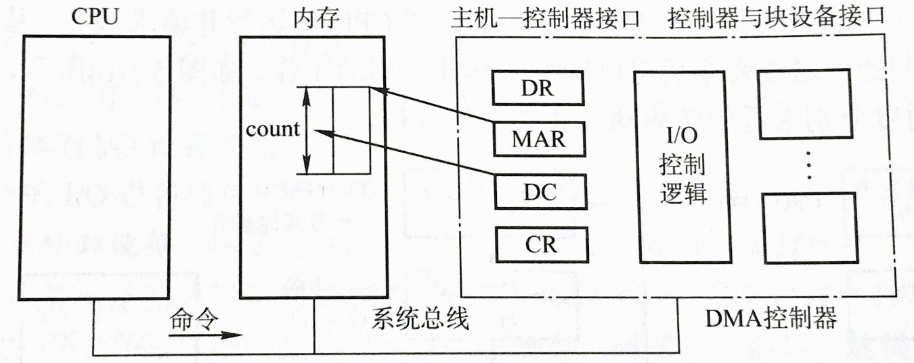
通道控制方式
与一般处理机的区别
通道指令地类型单一，没有自己地内存，通道所执行地通道程序放在主机地内存中，通道与CPU共享内存
与DMA方式的区别
DMA方式需要CPU来控制传输的数据块大小、传输的内存位置，而通道方式中这些信息由通道控制
DMA控制器对应一台设备与内存传递数据，一个通道可以控制多台设备与内存数据交换
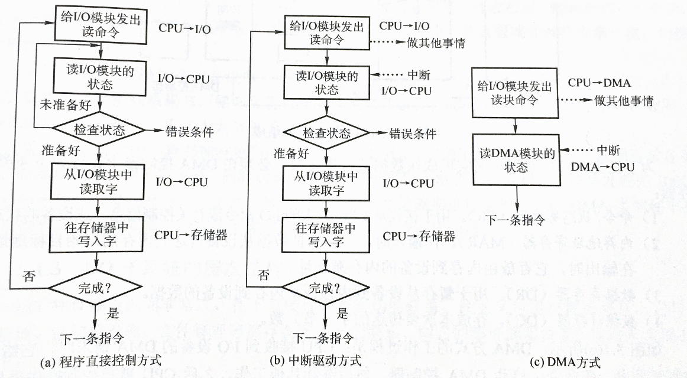
I/O子系统的层次结构
用户层I/O软件
实现与用户交互的接口，用户可直接调用在用户层提供的、与I/O操作有关的库函数，对设备进行操作
设备独立性软件
实现用户程序与设备驱动器的统一接口、设备命令、设备保护、设备分配与释放，为设备管理和数据传送提供必要的存储空间
逻辑设备和物理设备
在应用程序中，使用逻辑设备名来请求某类设备；而在系统实际执行时，将逻辑设备名映射成物理设备名使用
优点
1.增加设备分配的灵活性
2.易于实现I/O重定向（更换I/O设备而不改变应用程序）
主要功能
1.执行所有设备的公有操作
对设备的分配与回收；将逻辑设备名映射为物理设备名；对设备进行保护，禁止用户直接访问设备；缓冲管理；差错控制；提供独立于设备的大小统一的逻辑块，屏蔽设备之间信息交换单位大小和传输速率的差距
2.向用户层（文件层）提供统一接口
设备驱动程序
与硬件直接相关，负责具体实现系统对设备发出的操作指令，驱动I/O设备工作的驱动程序
中断处理程序
用于保存被中断进程的CPU环境，转入相应的中断处理程序进行处理，处理完并恢复被中断进程的现场后，返回到被中断程序
主要任务
进行进程上下文的切换，对处理中断信号源进行测试，读取设备状态和修改进程状态
硬件设备
I/O设备通常包括一个机械部件和一个电子部件
机械部件：设备本身
电子部件：设备控制器（适配器），在个人计算机中，通常是一块插入主板扩充槽的印制电路板
设备控制器功能
1.接收和识别CPU或通道发来的命令，如磁盘控制器能接收读、写、查找等命令
2.实现数据交换，包括设备和控制器之间的数据传输；通过数据总线或通道，控制器和主存之间的数据传输
3.发现和记录设备自身的状态信息，供CPU处理使用
4.设备地址识别
设备控制器组成
1.设备控制器与CPU的接口
2.设备控制器与设备的接口
3.I/O控制逻辑
I/O核心子系统
I/O子系统概述
由于I/O设备种类繁多，功能和传输速率差异巨大，因此需要多种方法来进行设备控制，这些方法共同组成来操作系统内核的I/O子系统，它将内核的其他方面从繁重的I/O设备管理中解放出来
提供的服务
I/O调度、缓冲与高速缓存、设备分配与回收、假脱机、设备保护、差错处理
I/O调度概念
应用程序所发布的系统调用的顺序不一定总是最佳的，I/O调度确定一个好的顺序来执行这些I/O请求，改善系统整体性能
高速缓存与缓冲区
磁盘高速缓存
操作系统中使用磁盘高速缓存技术来提高磁盘I/O速度，对高速缓存复制的访问要比原始数据访问更高效
磁盘高速缓存技术不同于通常意义下的介于CPU和内存之间的小容量高速存储器，而是利用内存中的存储空间来暂存从磁盘中读出的一系列盘块中的信息
逻辑上属于磁盘，物理上则是驻留在内存中的盘块
缓冲区
引入缓冲区的目的
1.缓和CPU对I/O设备间速度不匹配的矛盾
2.减少对CPU的中断频率，放宽对CPU中响应时间的限制
3.解决基本数据单元大小（数据粒度）不匹配的问题
4.提高CPU和I/O设备间的并行性
实现方法
1.采用硬件缓冲器，但由于成本太高，除一些关键部位外，一般不采用硬件缓冲器
2.采用缓冲区（位于内存区域）
特点
1.当缓冲区的数据非空时，不能往缓冲区冲入数据，只能从缓冲区把数据传除
2.当缓冲区为空时，可以往缓冲区冲入数据，但必须把缓冲区充满后，才能从缓冲区把数据传出
缓冲技术分类
1.单缓冲
在设备和处理机之间设置一个缓冲区。设备和处理机交换数据时，先把被交换数据写入缓冲区，然后需要数据的设备或处理机从缓冲区取走数据
从磁盘把一块数据输入缓冲区的时间为T
操作系统将该缓冲区中的数据传送到用户区的时间为M
CPU对这一块数据处理的时间为C
处理每块数据的用时为$max(C,T)+M$
2.双缓冲
3.循环缓冲

4.缓冲池